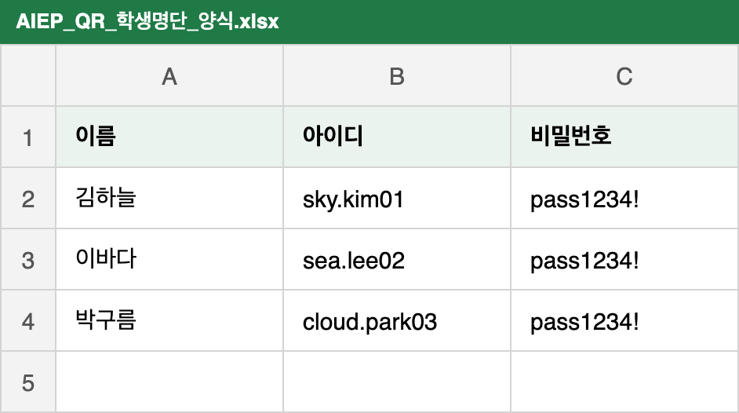
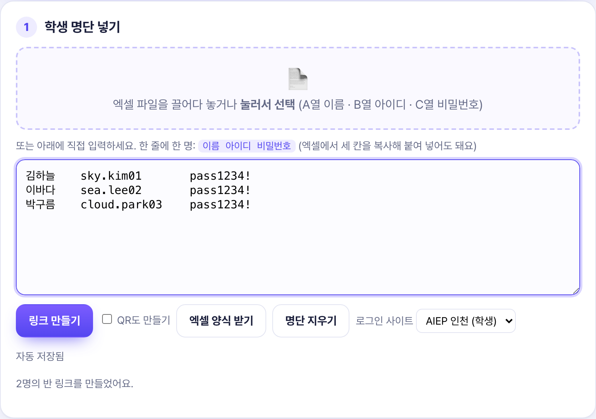
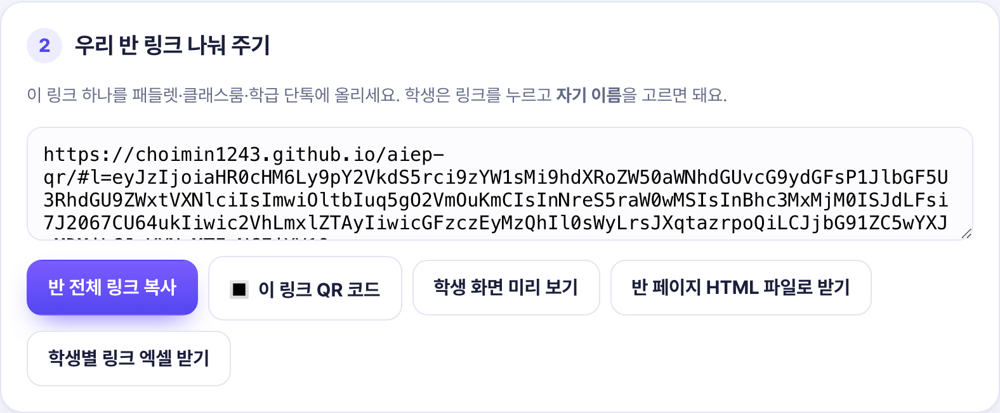
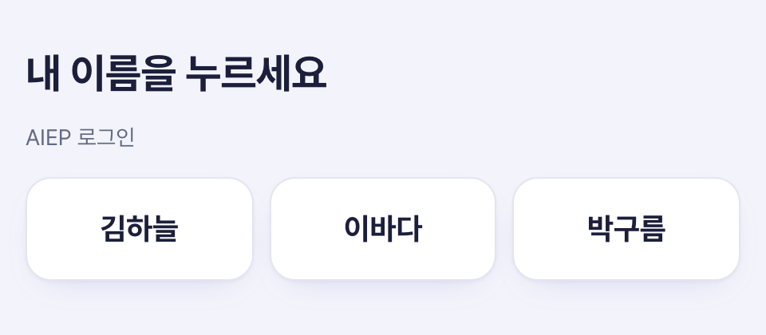
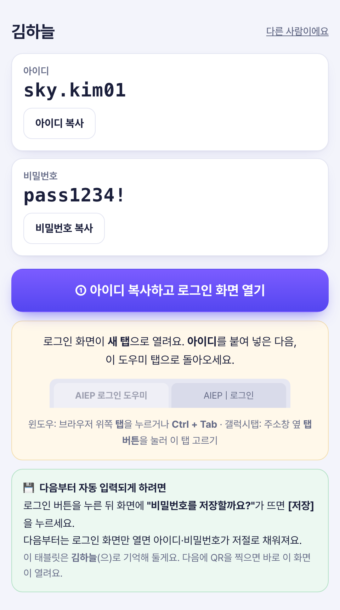
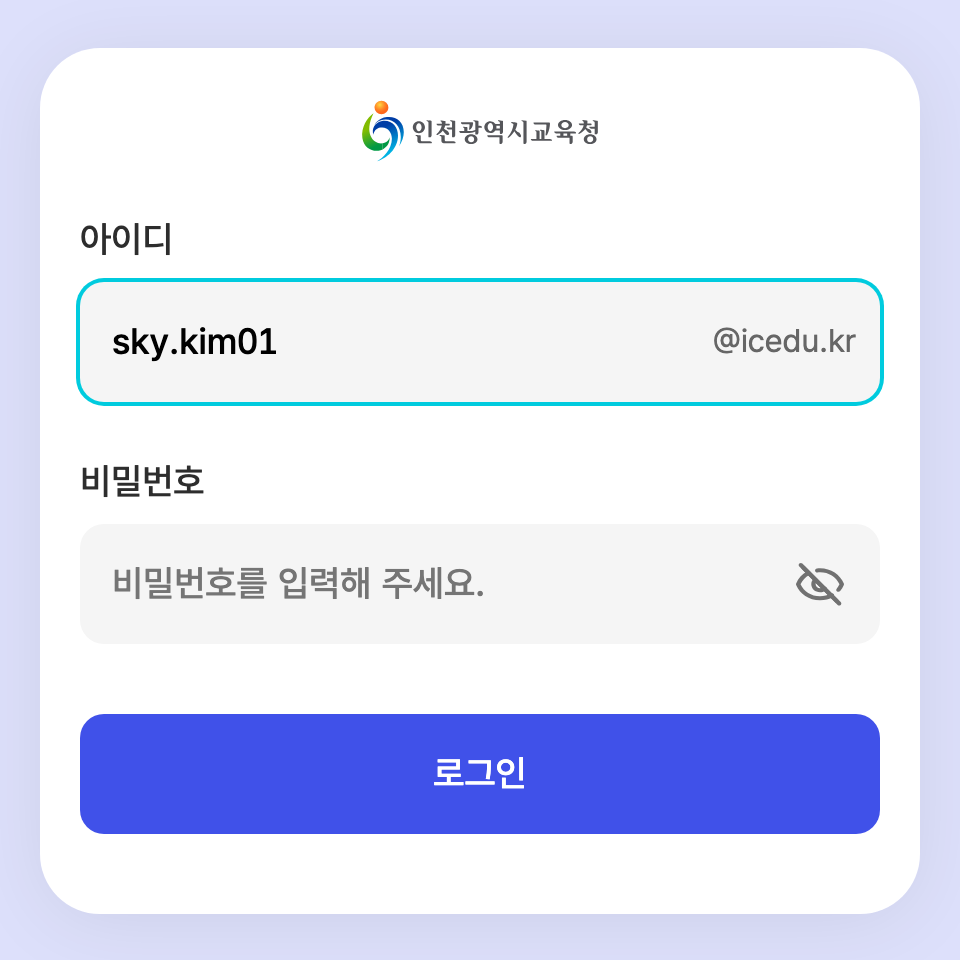
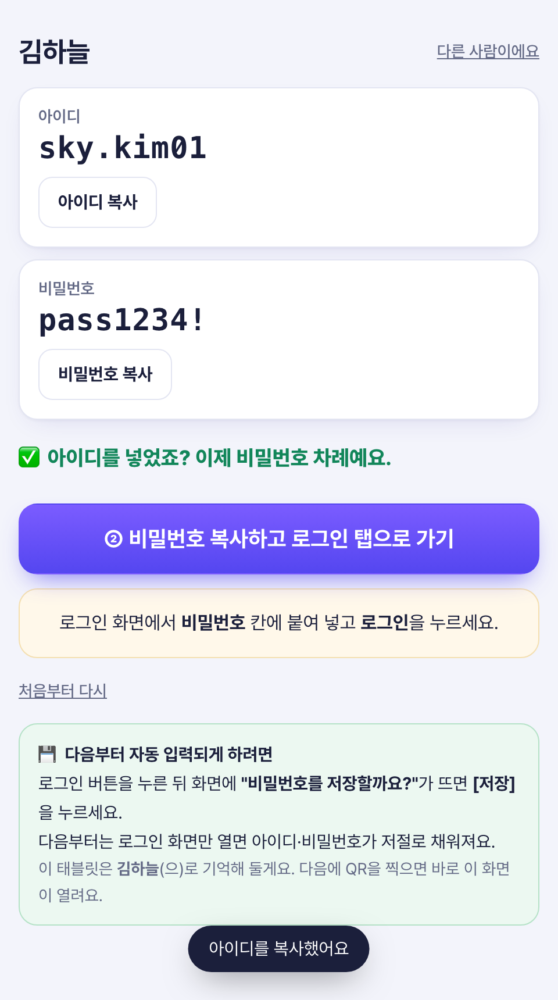
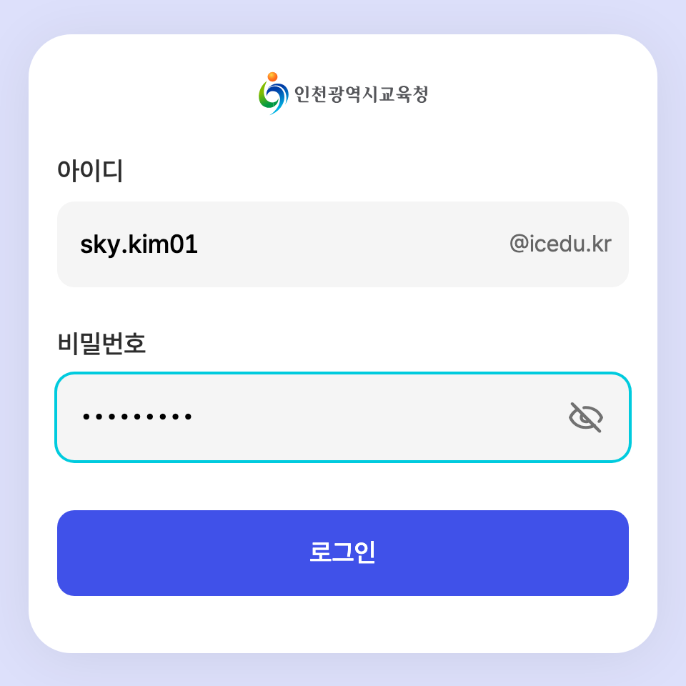

엑셀 명단 하나로 반 전체 로그인 링크를 만들고, 학생은 자기 이름만 눌러 로그인해요.
갤럭시탭·윈도우 노트북 모두 같은 방법으로 쓸 수 있어요.
A열 이름 · B열 아이디 · C열 비밀번호 순서로 적어요. 첫 줄 제목은 있어도 없어도 괜찮아요.

생성기의 점선 칸에 엑셀 파일을 끌어다 놓거나 눌러서 선택해요. 엑셀에서 세 칸을 복사해 아래 입력칸에 붙여 넣어도 돼요.
입력칸에 학생들이 들어왔는지 보고 보라색 [링크 만들기]를 눌러요. QR이 필요하면 [QR도 만들기]를 체크해요.

[반 전체 링크 복사]를 눌러 패들렛·클래스룸·학급 단톡에 올려요. 링크 하나로 반 전체가 들어올 수 있어요.
[🔳 이 링크 QR 코드]를 누르면 반 링크 QR이 나와요. PNG로 저장하거나 인쇄해서 칠판·TV에 띄우면 학생이 태블릿 카메라로 찍어 들어와요.

선생님이 올린 링크를 열고 자기 이름을 눌러요. 한 번 고르면 그 태블릿이 이름을 기억해서 다음부터는 바로 열려요.

[① 아이디 복사하고 로그인 화면 열기]를 누르면 아이디가 복사되고 AIEP 로그인 화면이 새 탭으로 열려요. 아이디 칸을 길게 눌러(윈도우는 Ctrl+V) 붙여넣기해요.

아이디를 넣었으면 도우미 탭으로 돌아와요. 로그인 탭은 닫지 마세요.

[② 비밀번호 복사하고 로그인 탭으로 가기]를 누르면 아이디가 그대로 들어 있는 로그인 탭으로 넘어가요. (안 넘어가면 직접 로그인 탭을 눌러요) 비밀번호 칸에 붙여 넣고 [로그인]을 눌러요.

로그인하면 AIEP 학생 메인 화면이 열려요.

입력칸을 비워 두고 [링크 만들기]를 누르면 학생이 직접 입력하는 링크가 만들어져요. 학생이 처음 한 번 자기 이름·아이디·비밀번호를 넣으면 그 태블릿에 저장돼요. 링크 안에는 계정이 없어서 공유해도 안전해요.
학생 화면 오른쪽 위 [다른 사람이에요]를 누르면 이름 고르기로 돌아가요.
예전에 열어 둔 페이지가 남아 있어서 그래요. 링크를 새로 열거나 새로고침(윈도우는 Ctrl+F5)한 뒤 다시 해 주세요.
로그인 탭을 닫았거나 도우미를 새로 연 경우예요. 아이디를 다시 붙여 넣거나 [처음부터 다시]를 눌러 ①부터 해 주세요.
화면 예시의 이름·아이디·비밀번호는 모두 연습용이에요.